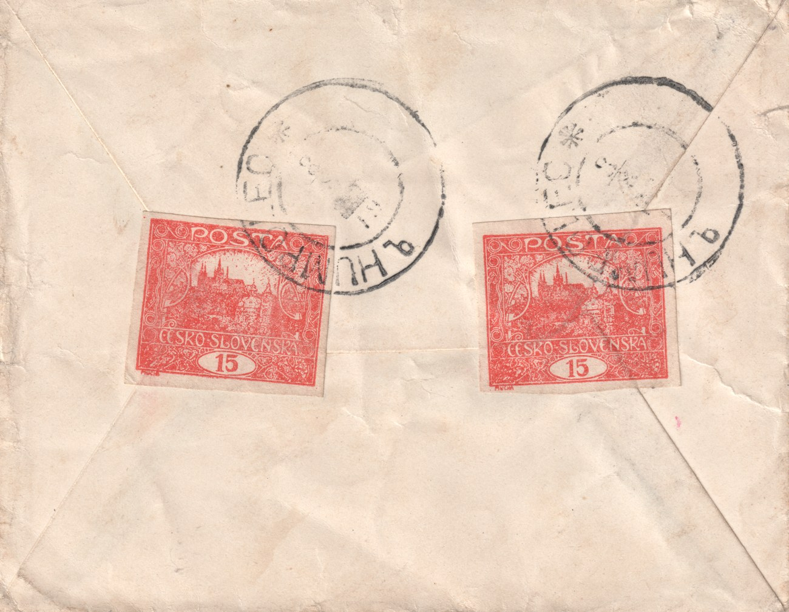
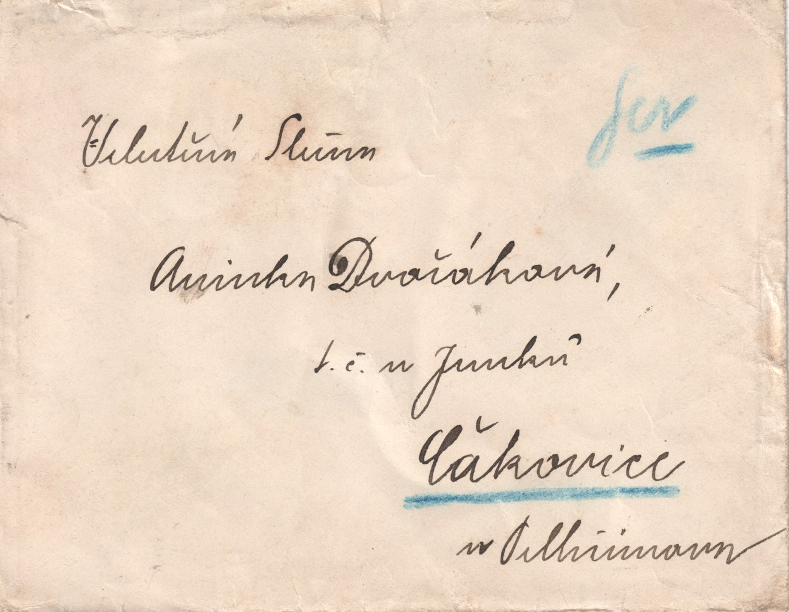
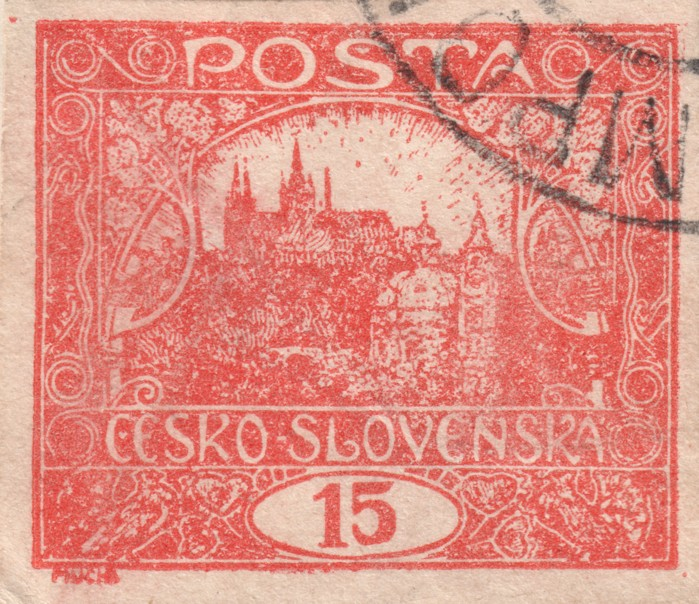
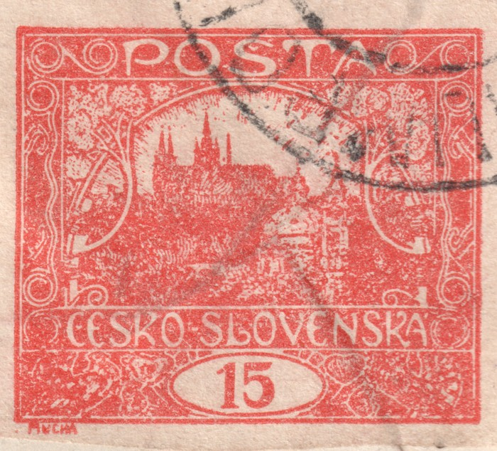

Dvojice 15h z tiskové desky VII na jednom dopise — Humpolec, 3. srpna 1919
Vzácným přírůstkem evidence hodnoty 15 h je dopis (obálka) adresovaný slečně Aničce Dvořákové, „t. č. u Junka“, do Čakovic u Sedlčan, orazítkovaný HUMPOLEC dne 3. srpna 1919. Frankaturu tvoří dvojice 15 h cihlově červené, nezoubkované — a obě známky pocházejí ze sedmé tiskové desky (TD VII), nejvzácnější ze všech sedmi desek této hodnoty.

Zajímavostí je, že odesílatel nalepil obě známky na zadní stranu obálky — na chlopeň — a nikoli na její přední, adresní stranu, jak bývalo obvyklé.

Frankatura a tarif
Dvojice 15 h dává dohromady 30 h. Datum 3. srpna 1919 spadá do II. tarifního období (15. 5. 1919 – 14. 3. 1920), v němž běžný dopis do 20 g stál 25 h a každých dalších 20 g 5 h navíc. Frankatura 30 h tak přesně odpovídá dopisu vyšší hmotnostní kategorie (do 40 g) — nejde tedy o náhodné zdvojení známky, ale o řádné vyplacení těžšího psaní.
Tisková deska VII — nejvzácnější z celé řady
Sedmá tisková deska 15 h je z hlediska dokumentace zdaleka nejchudší: evidence webu zahrnuje jen 122 určených kusů, pokrývajících 70 ze sta známkových polí (u nejlépe zastoupených polí jen kolem čtyř kusů) — na rozdíl od desek I–VI, kde jsou k dispozici tisíce známek a natrénované poziční modely počítačového rozpoznávání, zůstává TD VII pouze referenční sbírkou bez takového modelu. Určení pole se zde proto neopírá o automatické rozpoznávání jako u ostatních desek, ale o ruční porovnání sběratelem podle katalogových odlišovacích znaků: doložené kusy odpovídají poli 9 a poli 19 tiskové desky VII.


Zajímavým doplňkem je, že tisková deska VII je i typově téměř jednolitá — naprostá většina dosud evidovaných kusů (98 ze 100 hodnocených polí) patří ke spirálovému typu IIs a příčkovému typu Ip, shodně jako oba kusy z tohoto dopisu; jiné typové kombinace se na této desce vyskytují jen ojediněle (pole 13 a 93).
Dvě různá pole z tak řídce doložené desky pohromadě na jediném dopise, navíc s plným datem použití, řadí tento kus mezi významnější přírůstky evidence hodnoty 15 h.
A pair of 15h stamps from printing plate VII on one cover — Humpolec, 3 August 1919
A rare addition to the 15 h record is a cover addressed to Miss Anička Dvořáková, "t. č. u Junka" (then staying at the Junek household), in Čakovice near Sedlčany, cancelled HUMPOLEC on 3 August 1919. The franking consists of two 15 h brick red, imperforate stamps — and both come from the seventh printing plate (plate VII), the rarest of all seven plates of this value.
A curious detail: the sender affixed both stamps to the back of the envelope — on the flap — rather than to its front, address side, as was usual.
Franking and tariff
The two 15 h stamps together make 30 h. The date, 3 August 1919, falls within tariff period II (15 May 1919 – 14 March 1920), during which an ordinary letter up to 20 g cost 25 h, plus 5 h for every further 20 g. The 30 h franking matches exactly a letter in the next weight bracket (up to 40 g) — so this is not a random doubling of the stamp, but the correct payment for a heavier letter.
Printing plate VII — the rarest of the series
The seventh printing plate of the 15 h is by far the least documented: the site's records include only 122 attributed copies, covering 70 of the plate's hundred fields (even the best-represented fields have only around four copies) — unlike plates I–VI, where thousands of stamps and trained position-recognition models are available, plate VII remains a reference collection only, without such a model. Attribution here therefore does not rest on automated recognition as with the other plates, but on manual comparison by the collector against the catalogued distinguishing marks: the two copies documented here correspond to field 9 and field 19 of plate VII.
An interesting side note: plate VII is also remarkably uniform in type — the overwhelming majority of the copies recorded so far (98 of 100 assessed fields) belong to spiral type IIs and crossbar type Ip, the same combination as both stamps on this cover; other type combinations occur on this plate only in isolated cases (fields 13 and 93).
Two different fields from such a sparsely documented plate, together on a single cover and with a full date of use, make this piece one of the more significant additions to the 15 h record.